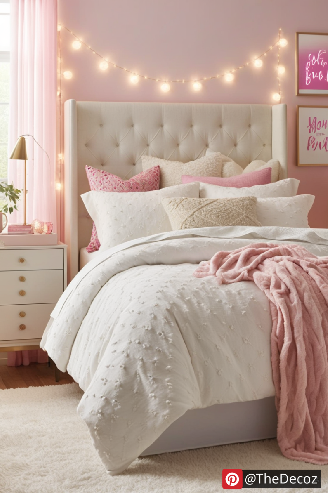
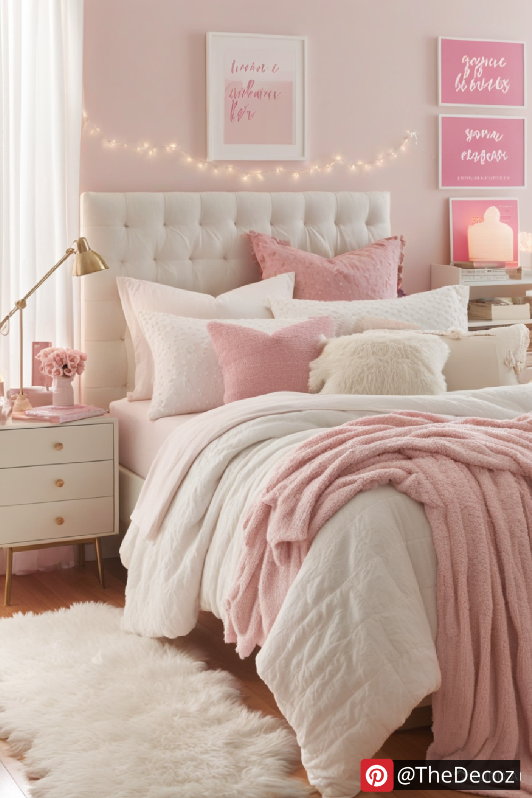
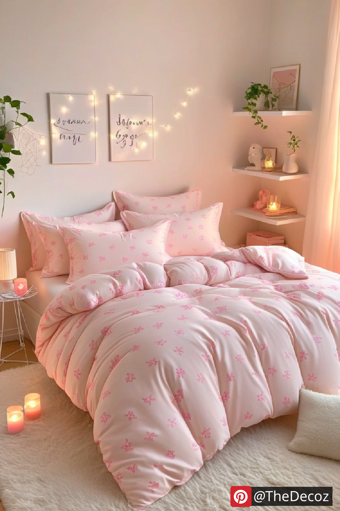
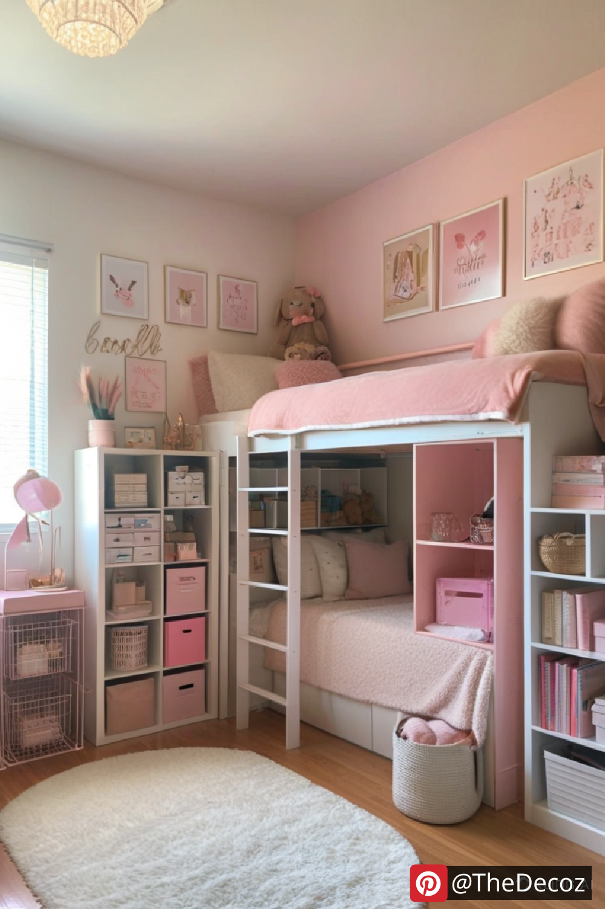
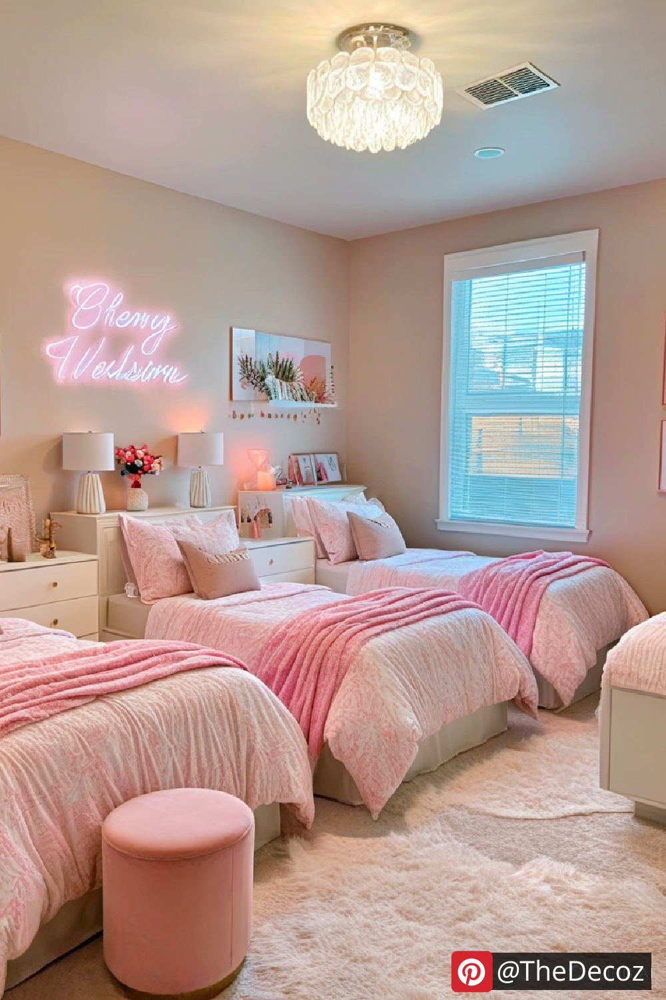

Moving into a dorm room is an exciting milestone, and decorating your space is the perfect way to make it feel like home. If you love a soft and elegant aesthetic, pink dorm room decor is the ideal choice. Whether you prefer a blush-toned minimalist look or a bold and vibrant pink theme, there are countless ways to infuse this color into your dorm while keeping it stylish and functional.
Pink comes in many different shades, and selecting the right one can set the tone for your dorm’s atmosphere. Here are a few popular options:
Blush Pink: Soft and subtle, perfect for a calming and sophisticated space.
Rose Gold: A trendy choice that adds a touch of luxury.
Hot Pink: Vibrant and energetic, ideal for making a bold statement.
Dusty Pink: A muted, warm shade that creates a cozy ambiance.
To create a cohesive pink dorm room, consider incorporating the following elements:
Your bed is the focal point of your dorm room, making bedding an essential decor element. Opt for pink duvet covers, sheets, and throw pillows to establish your theme. Mixing textures such as velvet, faux fur, or cotton adds depth and dimension to your space.
Personalize your dorm walls with pink-themed wall art, framed prints, or decorative tapestries. Consider inspirational quotes, abstract designs, or floral patterns to add character to your space. Peel-and-stick wallpaper in soft pink hues is also a great temporary option to enhance your decor.
A plush pink area rug can make your dorm feel more inviting and comfortable. Pair it with sheer or blackout curtains in complementary shades of pink or white to enhance the overall aesthetic while maintaining privacy and light control.
Organizing your study area with pink desk accessories, organizers, and stationery can keep things tidy while enhancing your theme. Look for rose gold or pastel pink file holders, pen cups, and storage bins to maintain a stylish and functional workspace.
Fairy lights, LED lamps, or neon signs in pink hues can elevate the ambiance of your dorm room. Soft lighting creates a cozy and relaxing environment, perfect for studying or unwinding after a long day.
To avoid overwhelming your space with pink, consider pairing it with neutral tones like white, beige, or gray. Metallic accents in gold or silver can add a touch of elegance, while greenery from plants can bring freshness and balance to the overall look.
Designing a pink dorm room decor theme is a fun and creative way to express your personality. With the right balance of color, texture, and decor elements, you can transform your dorm into a cozy, stylish, and inviting retreat. Whether you prefer a soft pastel look or a bold pink statement, there are endless ways to make your dorm feel like the perfect home away from home.
    